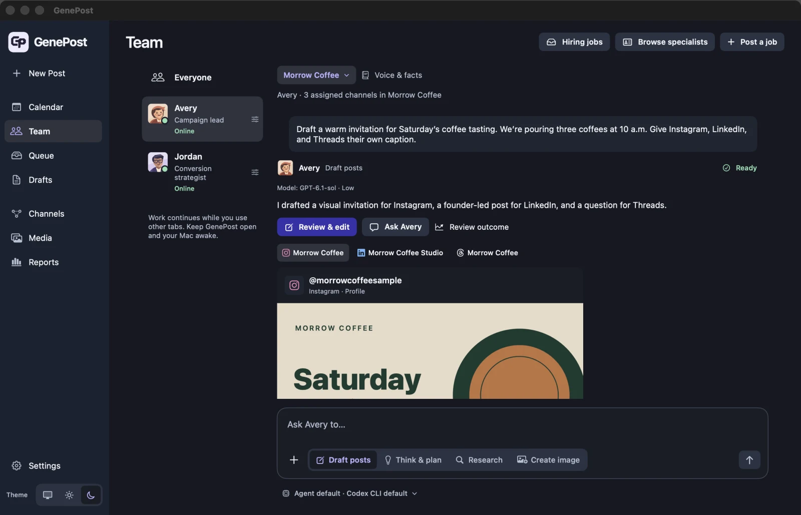
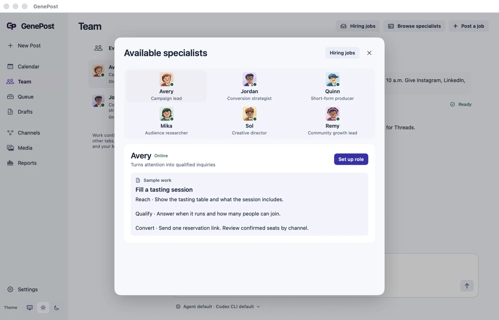
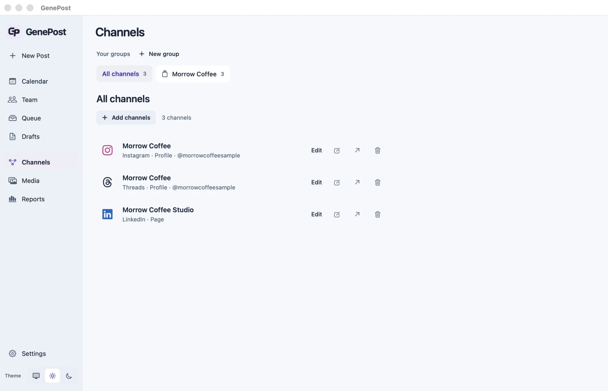
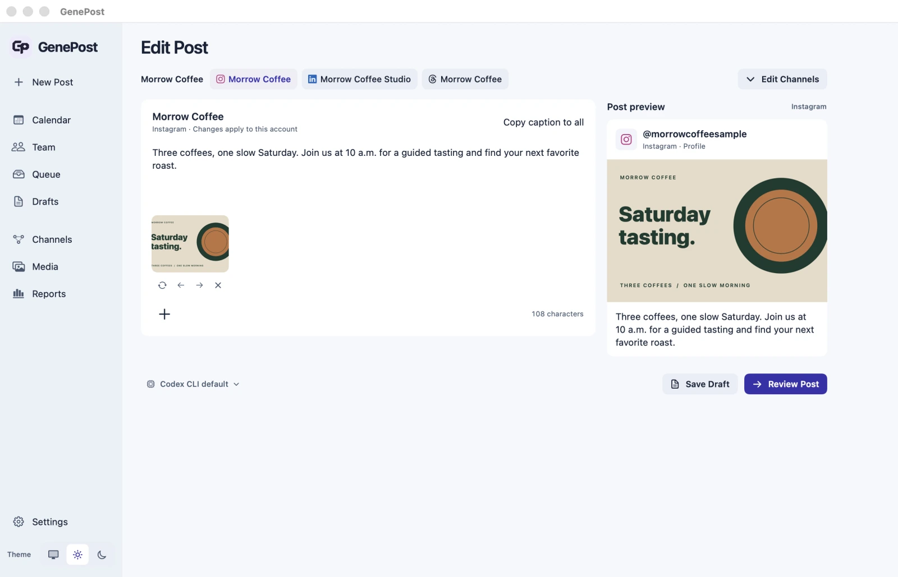
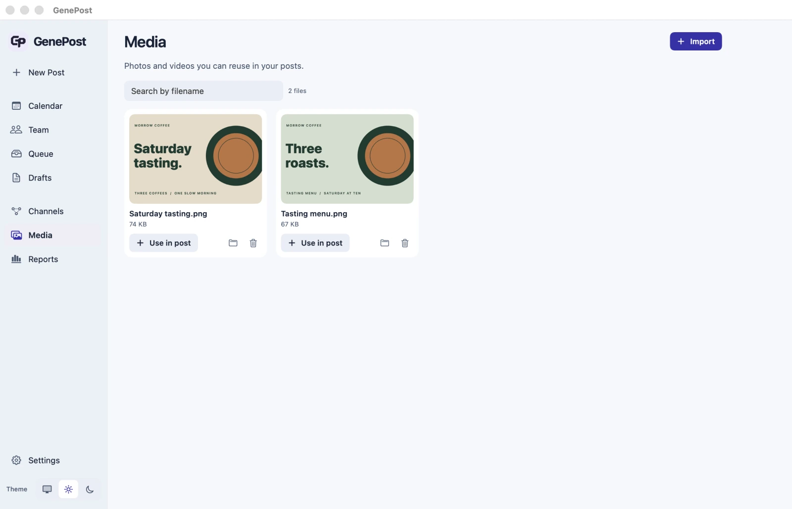
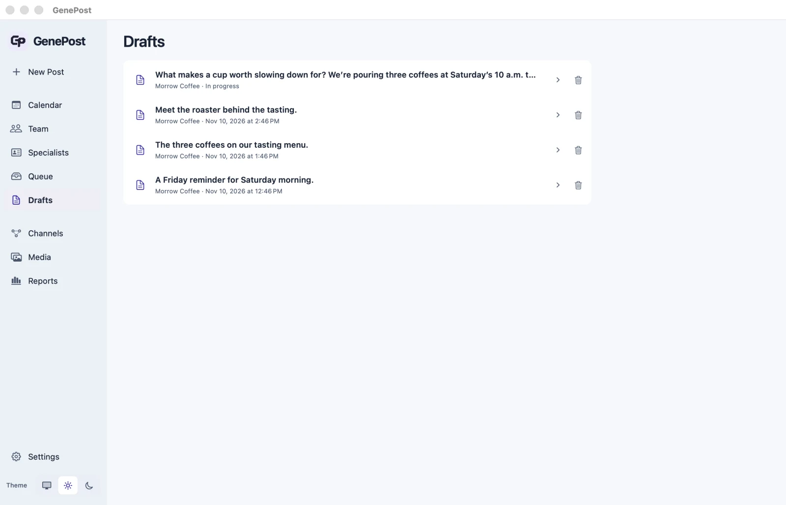
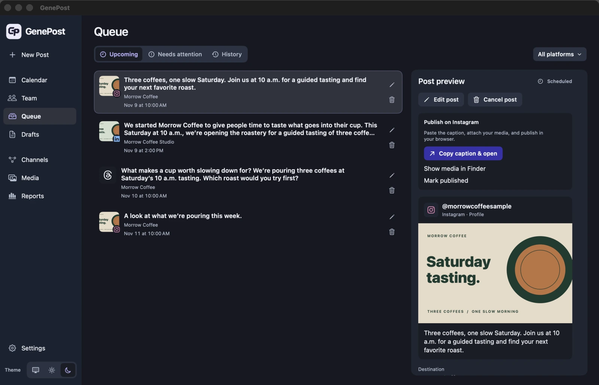
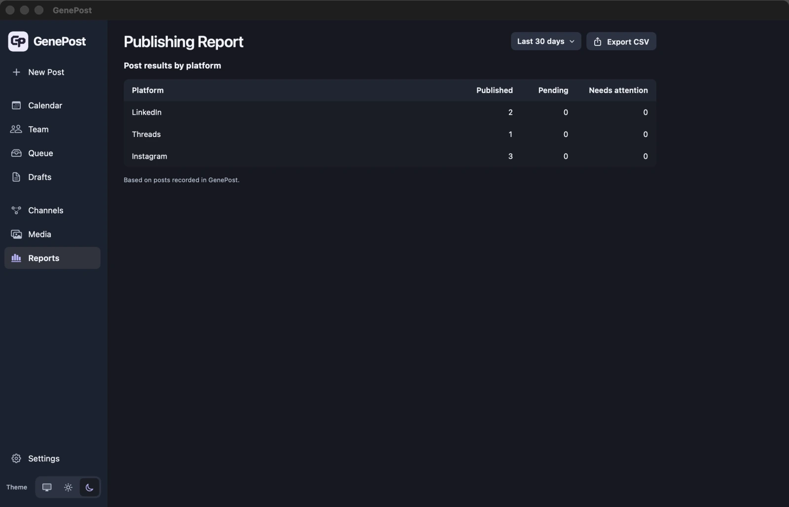
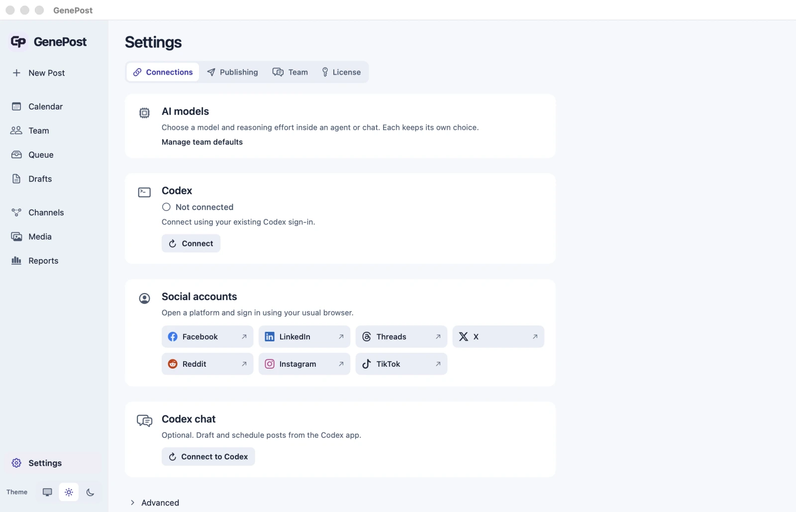

Instagram Invite people in
Instagram Invite people in
Three coffees, one slow Saturday. Join us at 10 a.m. for a guided tasting and find your next favorite roast.
Brief a teammate, review a different caption for each account, and publish from your Mac. Your agents, drafts, media, and calendar stay together.
Apple silicon · macOS 14+ · No social API keys

Plan posts for your accounts on
Morrow Coffee is a fictional café preparing for a Saturday tasting. Here’s the brief Freya received and what she brought back.
“Draft a warm invitation for Saturday’s coffee tasting. We’re pouring three coffees at 10 a.m. Give Instagram, LinkedIn, and Threads their own caption.”
One task in the Morrow Coffee group. Three saved accounts. The same confirmed details in every draft.
Three coffees, one slow Saturday. Join us at 10 a.m. for a guided tasting and find your next favorite roast.
We started Morrow Coffee to give people time to taste what goes into their cup. This Saturday at 10 a.m., we’re opening the roastery for a guided tasting of three coffees.
What makes a cup worth slowing down for? We’re pouring three coffees at Saturday’s 10 a.m. tasting. Which roast would you try first?
Explore the Mac app and follow the steps in each screen. Every view uses the same sample campaign.
Morrow Coffee needs someone to run its tasting launch. Compare how three AI applicants would approach the same brief.

Read the sample approach before hiring. Confirm the role, brand group, and allowed accounts.
Freya has the Morrow Coffee campaign. Her result stays beside the task, with a preview for each account.
Confirm the selected brand, teammate, and model. Read each account’s draft before using it.
Keep Instagram, LinkedIn, and Threads together in a Morrow Coffee group. Add a second account on a platform if the brand needs it.

Verify both the destination URL and posting identity, especially when one platform has multiple accounts.
The Instagram version pairs the tasting artwork with an invitation. Switch accounts to review the LinkedIn story or Threads conversation starter.

Check the exact caption, media order, identity, and audience for every account.
The tasting flyer and menu are saved in Media, ready for the announcement and reminder.

Confirm that the selected file is the version you want on that account. Keep originals in your own backup.
Keep the roaster introduction, tasting menu, and Friday reminder ready for review.

Check the brand and last saved version before scheduling. Each saved account can have different content.
See the invitation, founder post, and reminder across their accounts. Use the calendar to spot gaps and overlaps.

Confirm the time zone and account. Calendar records your plan for the browser handoff.
The selected post shows the channel, caption, artwork, and the next action.

Check the signed-in browser identity before publishing. Use History to confirm the local record afterward.
Review publishing records across the brand’s channels and export them for a client update.

Compare published counts with your plan. Reach, impressions, and engagement live in the platform dashboards.
Use your existing Codex sign-in and activate GenePost on your Mac. Set model defaults in the agent’s profile or inside a conversation.

Confirm the connection status. The model displayed in a chat is the one its next task will use.
Set up a brand group once, then give each agent the responsibility you’d hand a teammate.
Give your agent: the time, location, artwork, and booking link for a café tasting or studio workshop.
Review: an Instagram invitation, a Facebook reminder with the booking details, and a Threads question to start the conversation.
Give your team: one brief for a florist’s Friday pickup and another for a design studio’s case study.
Review: warm, practical copy for the florist and a concise founder post for the studio. Each brand keeps its own notes and accounts.
Give your agent: what changed, who benefits, and the screenshot that shows it working.
Review: a short X update, a longer LinkedIn post explaining the problem, and a week of follow-ups saved to Calendar.
Connect the GenePost plugin to brief your team, review drafts, and plan posts from a local Codex chat. GenePost uses your own Codex sign-in.
Set up Codex Claude Code via MCPAsk GenePost to draft three posts for Morrow Coffee’s tasting event. Keep each caption in the brand’s voice, then show me the drafts to review.
Your license covers GenePost 2 on up to two Macs for one person. Use it for your own brands and client work.
$39 USD
Pay once for GenePost 2.
Checkout opens with the signed Mac release.
Read the setup guideCodex access is separate. Any applicable tax appears at checkout.
An Apple silicon Mac with macOS 14 or later, a supported Codex CLI signed in with ChatGPT, and access to the accounts where you publish. Activation, AI tasks, and publishing require internet access.
GenePost prepares and schedules posts in your local calendar. When you’re ready, open the post in Queue, copy the caption, and publish through the account’s own website. You can mark it published afterward.
You use your existing social account in your browser. GenePost keeps the caption, media, and channel link together for the handoff.
Your working copies are stored on your Mac. The content you choose for an AI task can be sent to your connected provider for processing. Read the privacy policy for details.
Deactivate the old Mac in Settings → License and activate the new Mac using the key in your purchase receipt. If the old Mac is unavailable, contact support.